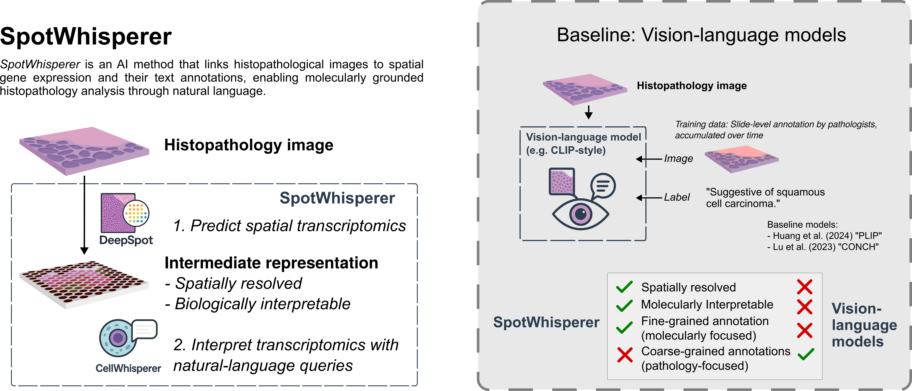
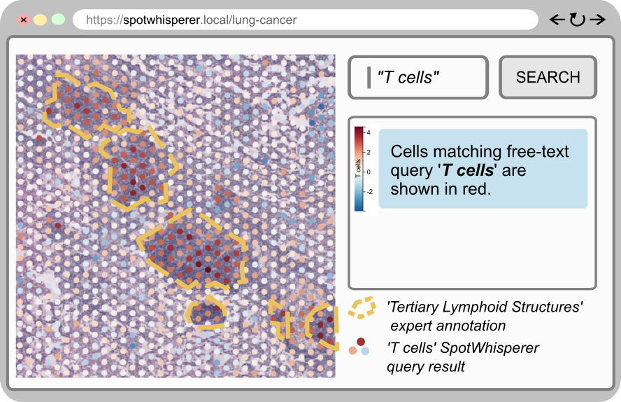
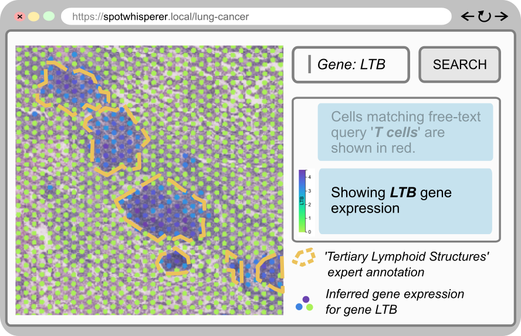

Histopathology refers to the microscopic examination of diseased tissues and routinely guides treatment decisions for cancer and other diseases. Currently, this analysis focuses on morphological features but rarely considers gene expression information, which can add an important molecular dimension. We introduce SpotWhisperer, an AI method that links histopathological images to spatial gene expression profiles and their text annotations, enabling molecularly grounded histopathology analysis through natural language. Our method outperforms pathology vision-language models on a newly curated benchmark dataset, dedicated to spatially resolved H&E annotation. Integrated into a web interface, SpotWhisperer enables interactive exploration of cell types and disease mechanisms using free-text queries with access to inferred spatial gene expression profiles. SpotWhisperer analyzes cost-effective pathology images with spatial gene expression and natural-language AI, demonstrating a path for routine integration of microscopic molecular information into histopathology.


The web interface allows users to search for cellular features like "T cells" and visualizes the matching regions, which align with expert annotations of Tertiary Lymphoid Structures.
The underlying molecular representation allows for exploring the inferred expression of specific genes, such as LTB, which is a known marker for lymphoid structures.
This video demonstrates the core functionality of the SpotWhisperer web application. It showcases how users can load a histopathology sample, perform natural language queries to identify cellular regions like "T cells," and explore the underlying inferred gene expression data that drives these predictions. The demonstration highlights the intuitive, interactive, and molecularly-grounded approach of our method.
This benchmark dataset consists of H&E images from five lung cancer samples (Dawo et al., 2025), annotated with cell types and with pathologically relevant labels at spot-level resolution. We refer to our publication (Schaefer et al., 2025) for the methodology of annotation generation.
The dataset contains the following compressed h5ad files:
LC1.h5ad.gz - Lung cancer sample 1LC2.h5ad.gz - Lung cancer sample 2LC3.h5ad.gz - Lung cancer sample 3LC4.h5ad.gz - Lung cancer sample 4LC5.h5ad.gz - Lung cancer sample 5and can also be downloaded as a complete (compressed) tar archive.
import scanpy as sc
# Read the curated file
file_path = 'LC1.h5ad.gz'
adata = sc.read_h5ad(file_path)
# Display basic information
print(adata)
# Quick data summary
print(f"\nSummary:")
# Basic statistics
print(f"Dataset shape: {adata.shape}")
print(f"In-tissue spots: {adata.obs['in_tissue'].sum()}")
# Annotation distributions
print("\nRegion annotations:")
print(adata.obs['region_type_expert_annotation'].value_counts())
print("\nCell type annotations:")
print(adata.obs['cell_type_annotations'].value_counts())
# Gene information
print(f"\nGenes available: {adata.n_vars}")
print(f"Sample gene names: {adata.var['gene_name'].head().tolist()}")
# Spatial coordinates
print(f"\nSpatial coordinates shape: {adata.obsm['spatial'].shape}")
# Available expression layers
print(f"\nExpression layers: {list(adata.layers.keys())}")Below is a summary of the essential data components for the curated data:
adata.X contains DeepSpot-inferred gene expression (SPOTS × GENES)adata.layers['raw_counts'] holds raw spatial transcriptomics read countsadata.layers['log10k_norm_raw_counts'] contains log10k nomalised raw gene expression countsadata.var['gene_name'] contains human-readable gene namesadata.obs['x_array'], adata.obs['y_array']: Visium array coordinatesadata.obs['x_pixel'], adata.obs['y_pixel']: histology image pixel coordinatesadata.obsm['spatial']: 2D spatial coordinates for visualizationadata.uns['spatial']['library_id']['images']['hires']: high-resolution histology imageadata.obs['in_tissue']: boolean indicating spots within tissue boundariesadata.obs['region_type_expert_annotation']: manual tissue region annotationsadata.obs['cell_type_annotations']: automated cell type predictions from reference atlasadata.obs['sample_ID']: sample identifiersadata.obs['barcode']: unique spot barcodesadata.uns['he_slide']: H&E slide metadata (if available)adata.uns['meta']: additional experimental metadata (if available)The SpotWhisperer paper is available at bioRxiv and was Accepted in the ICML 2025 FM4LS Workshop, find this paper on OpenReview.
If you use SpotWhisperer or the associated benchmark dataset in your research, please cite:
@article {Schaefer2025.07.14.664402,
author = {Schaefer, Moritz and Nonchev, Kalin and Awasthi, Animesh and Burton, Jake and Koelzer, Viktor H and R{\"a}tsch, Gunnar and Bock, Christoph},
title = {Molecularly informed analysis of histopathology images using natural language},
elocation-id = {2025.07.14.664402},
year = {2025},
doi = {10.1101/2025.07.14.664402},
URL = {https://www.biorxiv.org/content/early/2025/07/18/2025.07.14.664402},
eprint = {https://www.biorxiv.org/content/early/2025/07/18/2025.07.14.664402.full.pdf},
journal = {bioRxiv}
}and
@misc{dawo2025visium,
title = "{10x} Visium spatial transcriptomics dataset: Kidney (3) and lung (5) cancer with tertiary lymphoid structures",
author = "Dawo, Sebastian and Nonchev, Kalin and Silina, Karina",
publisher = "Zenodo",
year = 2025,
url = "http://dx.doi.org/10.5281/zenodo.14620362",
doi = "10.5281/ZENODO.14620362"
}